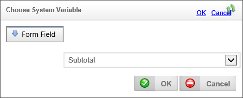
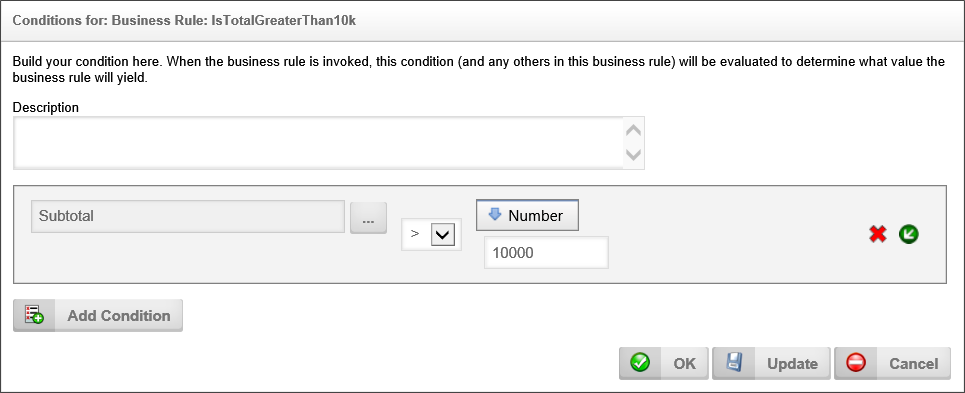
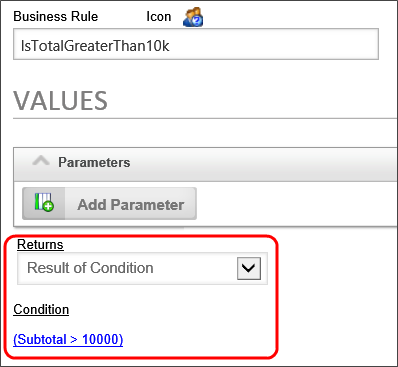
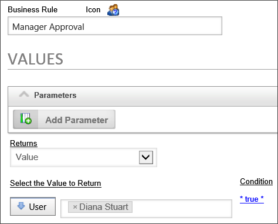

|
|
Lesson Contents | In this Lesson, you will learn how to configure the Business Rules in the training sample project. |
In the sample project that accompanies this training, there are four Business Rules, three of which are very similar, in that they return users, and are used to specify who is assigned a task in the process we will create in the next module. The last Business Rule returns a true or false value that will determine whether one of the Process Timeline activities will be needed in the process.
The first Business Rule we will create will return a simple true or false value based on the amount of the Purchase request in the sample Form.
Navigate to the root folder of your training project, and create new folder by selecting "Folder" from the Create New… dropdown located at the upper right of the Process Director screen. Name the new folder "Business Rules".
In the Business Rules folder, create a Business Rule by selecting it from the Create new… dropdown, naming it "IsTotalGreaterThan10k", and clicking the OK button to create it.
When the Business Rule configuration screen appears, open the Properties tab and set the Group In Value Picker property to "Core Training".
Set the Form Associated with Business Rule property to the Purchase Request Form you created previously by selecting the Form from the Object Picker control. Since we want to be sure that the Form is set as the default Form for this condition, click the Update menu item to save the changes to the Business Rule that we've made so far.
In the Values tab, ensure that the Returns property is set to "Result of Condition".
Since we need to change the default condition property from its current condition of "* true *", click the condition link to open the Condition Builder.
As a default, Process Director will choose a form field value as the default condition. To select the specific form field you wish to use, click the Build button to open the dialog box containing the dropdown list of Form fields. Because we already set the sample PR request form as the Form associated with this Business Rule, we will only see a dropdown containing the fields contained in the Purchase Request Form. Select the Subtotal field from the dropdown, then click the OK button to save your selection and close the dialog box.

In the Condition Builder dialog box, the Subtotal field will now appear in the picker control. Set the operator dropdown to ">". Next, select "Number" from the return type dropdown menu, then set the value of the number as "10000". The Condition builder dialog box should now look like the example below.

Click the OK button to save your settings and close the dialog box. The settings for your Business Rule should now display the condition properly.

The next Business Rule we will create will return a user object, without using a condition.
Navigate to the Business Rules folder of your training project, and create new Business Rule by selecting it from the Create new… dropdown, naming it "Manager Approval", and clicking the OK button to create it.
When the Business Rule configuration screen appears, open the Values tab, and set the Group In Value Picker property to "Core Training". Set the Returns property to "Value". When you change the Returns property, an additional property will appear that is named Select the Value to Return. The new section will contain a dropdown menu, from which you should select "User" as the value to return. When you make your selection, a User Picker will appear to enable you to select the user. Select an appropriate user, such as a test user, if available. When we run the process we will create in the next module, the process will use this user as an assignee for one of the tasks. Since we will not make any changes to the condition, this business rule will always return the user you've selected.
We are finished with configuring this Business Rule. Before clicking the OK button to save and close the Business Rule definition.

In our sample project, we're using business rules like the one we just configured to determine what users will be assigned to the task. So, the question arises, why not simply assign the user directly in the Process Timeline activity?
The thing about Business Rules is that they're universally available inside Process Director. They can be re-used in many different Workflows or Process Timelines. Conversely, when you directly assign a user to a Workflow task or Process Timeline activity, they are only assigned in that specific process task. What happens then, if an assigned user leaves the organization? Well, you have to go through every single process in which that user participates, and change the user to his replacement.
If you assign users via a Business Rule, however, you only have to change that single Business Rule, and the user is automatically changed in every process in which a task is assigned via the Business Rule. For users—especially managerial-level users—who participate in many processes, assignment by business rule is a far more efficient method of assignment, and one which is far easier to manage as personnel changes occur.